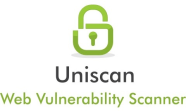

SCAN TIME
Scan Started:
6/5/2020 5:37:32
TARGET
Domain
https://app.secaas.dev/
Server Banner:
nginx/1.17.8
Target IP:
40.71.101.135
CRAWLING
Directory check:
Skipped because https://app.secaas.dev/uniscan606/ did not return the code 404
Crawling finished, found:
1868 URL's
Web Backdoors:
Timthumb:
File Upload Forms:
FCKeditor File Upload:
PHPinfo() Disclosure:
E-mails:
External hosts:
Source Code Disclosure:
Ignored Files:
DYNAMIC TESTS
Learning New Directories:
0 New directories added.
FCKeditor tests:
Skipped because https://app.secaas.dev/testing123 did not return the code 404
Timthumb < 1.33 vulnerability:
Backup Files:
Skipped because https://app.secaas.dev/testing123 did not return the code 404
Blind SQL Injection:
Local File Include:
PHP CGI Argument Injection:
Remote Command Execution:
Remote File Include:
SQL Injection:
Cross-Site Scripting (XSS):
Web Shell Finder: